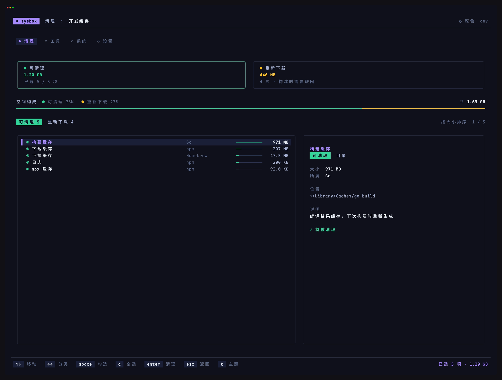
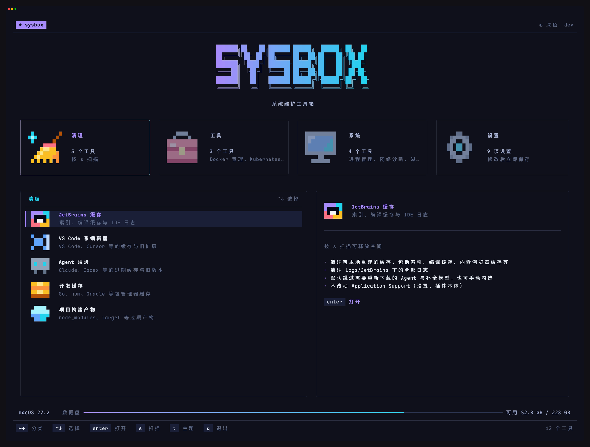
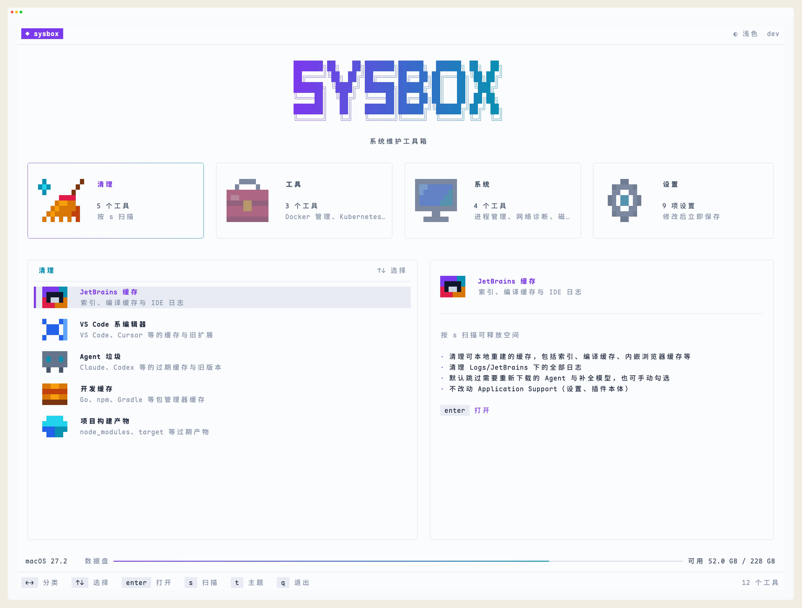

01 / CLEANUPsysbox devcache
给开发环境腾点空间
扫描编辑器、包管理器和旧项目的缓存与产物，看清每一项占了多少空间，再勾选要清理的条目。

- JetBrains
- VS Code / Cursor
- Go / npm / pnpm
- Gradle / Maven / Cargo
- Agent 垃圾
[ SYS.TOOLBOX ] 开发者的系统工具箱
清理堆积的缓存，照看运行的容器，排查端口和网络，定位磁盘占用，管理服务与启动项。日常维护不必四处翻命令，在一个终端界面里顺手完成。


❯ sysbox从一个命令开始
[01] TOOLBOX
从开发环境到系统资源，常用操作都放在一起。打开 sysbox，方向键选中，回车就能开始。
扫描编辑器、包管理器和旧项目的缓存与产物，看清每一项占了多少空间，再勾选要清理的条目。

查询 Docker 容器与镜像，切换 Kubernetes 集群和命名空间。看日志、进终端、启停和扩缩容，都在快捷键上。
按 CPU、内存和端口查看进程。完整命令、父子进程、网络连接与环境变量，在同一处排查。
查询域名地址，测试 TCP 连通性，查看 HTTP 状态与连接耗时。代理环境变量、系统配置和本次请求路径一起看。
查看各磁盘容量，按占用浏览目录，找出最大的文件。进入目录继续分析，匹配到缓存或构建产物时直接打开对应清理工具。
查看服务状态和启动项，搜索名称与命令，查询详情和日志。启停服务、调整启用状态，确认后执行。
[02] KEYBOARD FIRST
方向键选择，回车打开，Esc 返回。快捷键常驻底栏，深浅主题随时切换。
❯ enter 打开选中的工具
扫描编辑器、包管理器和构建工具的缓存，按类别列出占用空间，勾选后清理。
[03] SAFETY
该清什么、会影响什么，在动手之前看清楚。扫描结果与操作提示，就在当前界面。
首页按 s 扫描清理工具，查看各项与合计空间。清理前列出条目，由你勾选并确认。
SCAN FIRST构建依赖、近期缓存和待核查条目默认不勾选。Agent 的会话、凭据和配置不在扫描范围内。
SAFE DEFAULT清理、删除资源、结束进程和排空节点需要确认。Docker 与 Kubernetes 的日常操作用快捷键直接执行。
CONFIRM清理范围和边界写在文档里，源码公开。你可以查看实现、提出问题，也可以参与改进。
OPEN SOURCE先看清楚，再动手。
支持 macOS 与 Windows，提供 x86_64 和 ARM64 版本。sysbox 在终端中运行，Windows 建议使用 Windows Terminal。Docker 管理需要 Docker CLI 和运行中的引擎，Kubernetes 管理需要 kubectl 与集群访问权限。服务管理按当前用户权限执行，部分系统服务操作需要管理员权限。
清理工具按各自规则筛选缓存与产物。JetBrains 清理不处理设置与插件目录；VS Code 的设置、备份与未知目录默认不勾选，但部分条目允许手动纳入。项目产物会检查对应项目文件和构建特征。请在确认前阅读所选条目与操作提示。查看功能概览 ↗
可以。运行 sysbox devcache 打开开发缓存，sysbox docker 管理容器，sysbox processes 查看进程，sysbox network 诊断网络，sysbox disk 分析磁盘，sysbox services 管理服务与启动项。运行 sysbox list 查看全部工具名。
默认跟随终端背景。按 t 在自动、浅色、深色之间切换，选择会被记住；也可以运行 sysbox --theme light，或在首页设置里修改。
运行 sysbox update 更新，或在首页提示新版本时按 u。运行 sysbox uninstall 卸载并保留配置；sysbox uninstall --purge 同时移除配置。卸载前会列出操作并确认。
可以到 GitHub Issues 报告问题、提出功能建议。参与开发请查看 贡献指南。